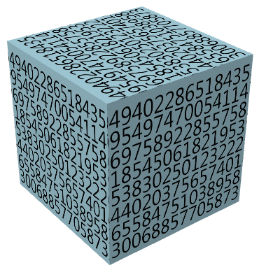

PETZOLD BOOK BLOG
| Recent Entries | ||
| < Previous | Browse the Archives | Next > |
| Subscribe to the RSS Feed |
February 4, 2007
Roscoe, N.Y.
So I've been reading this document on WPF 3D performance, and one of the recommendations is that you try to cache tiled brushes because normally the brushes have to be re-rendered when something needs to be painted with the brush. I also read that:
And naturally this starts me thinking not about how I can make my 3D programs more efficient, but all the ways that text could be animated in a VisualBrush used on a 3D figure.
You can actually animate the text itself, and one way is displaying a floating-point value that's being animated. And so, once the idea was conceived, it was impossible to let it go, and the result is a program I call Math Phobic's Nightmare Cube, which is a cube covered with constantly changing randomly-appearing numbers:

Each side of the cube is covered with the same VisualBrush, which is a StackPanel with eight Label controls. Eight DoubleAnimation objects, each running with a different duration, animate the Content property of each Label with values that range from Math.E through Math.PI. It's OK to animate a Content property with a DoubleAnimation because Content is of type Object and the Double is displayed with its ToString method. HOWEVER, I discovered that the Content property of each Label has to be initially set to a Double or the animation won't work. This happens in a Style resource for the Label.
Notice how the the Viewbox property for the VisualBrush is set to "0.13 0 0.82 1". This is a Rect object; the nonzero first element trims off some of the beginning brush so that the first digit and decimal point aren't displayed. The nonzero third element trims off the last digit as well, which is sometimes blank.
(c) Copyright Charles Petzold
www.charlespetzold.com